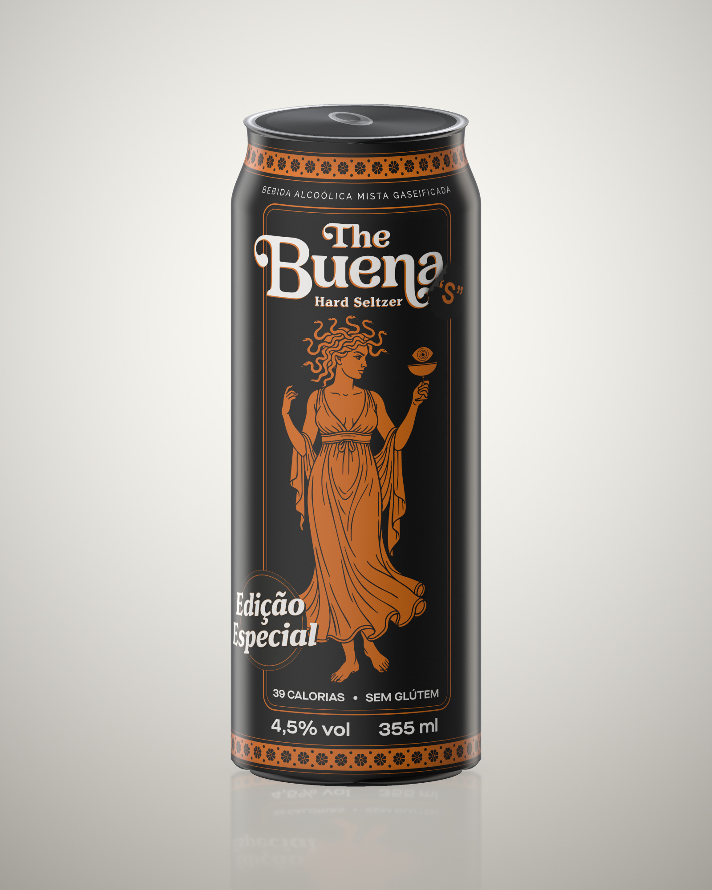
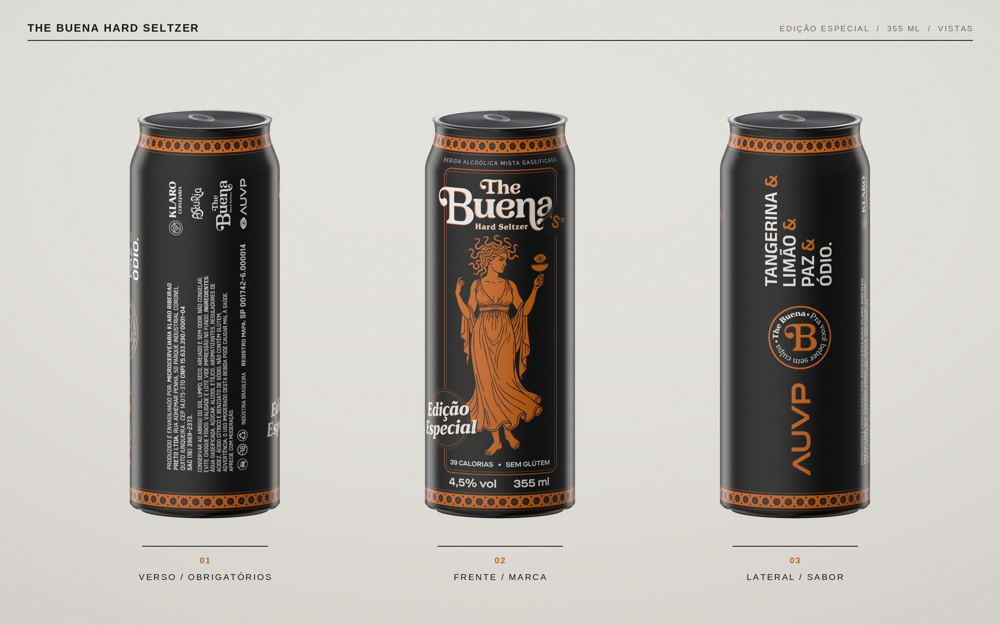
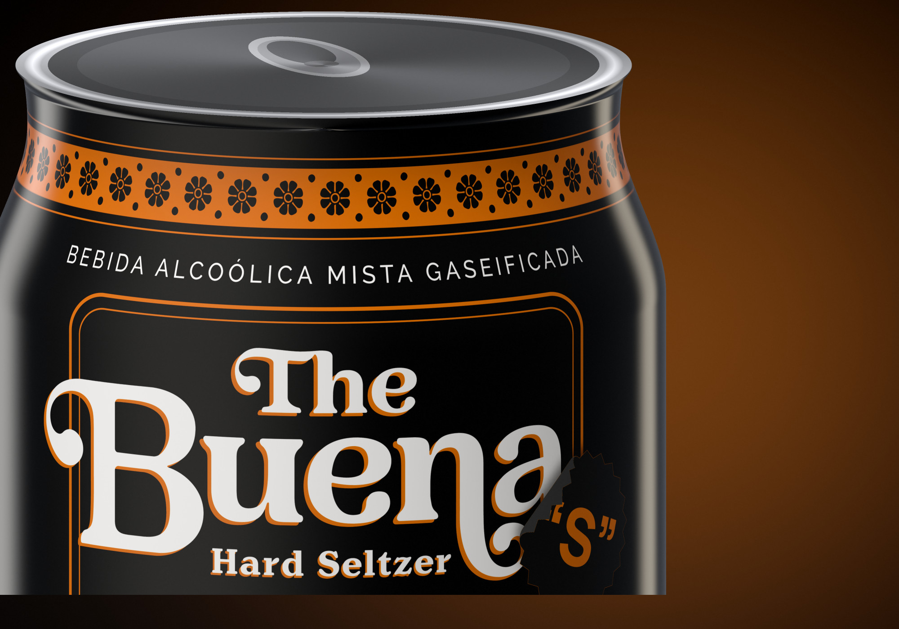
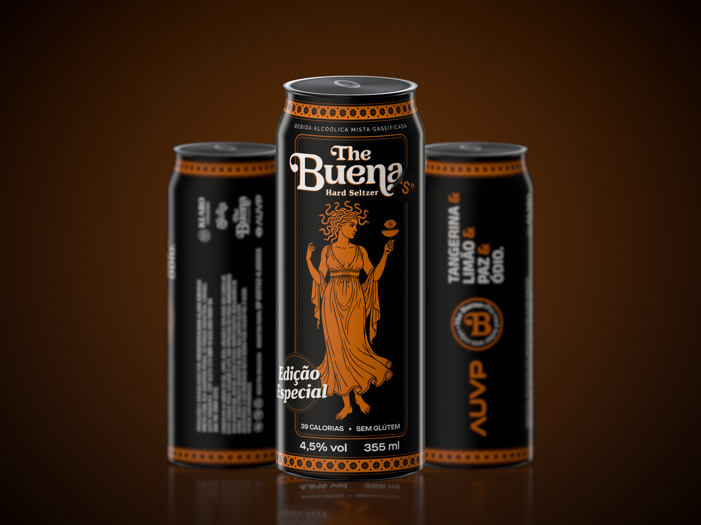
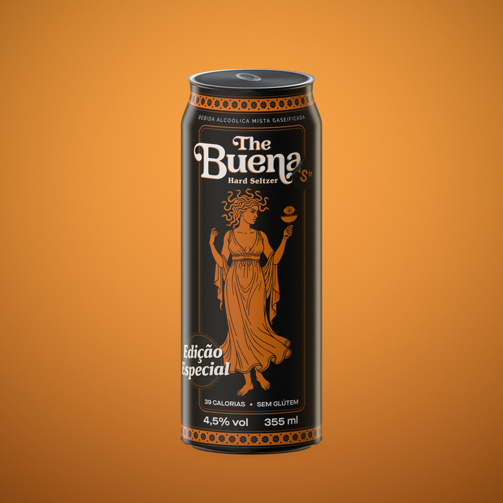
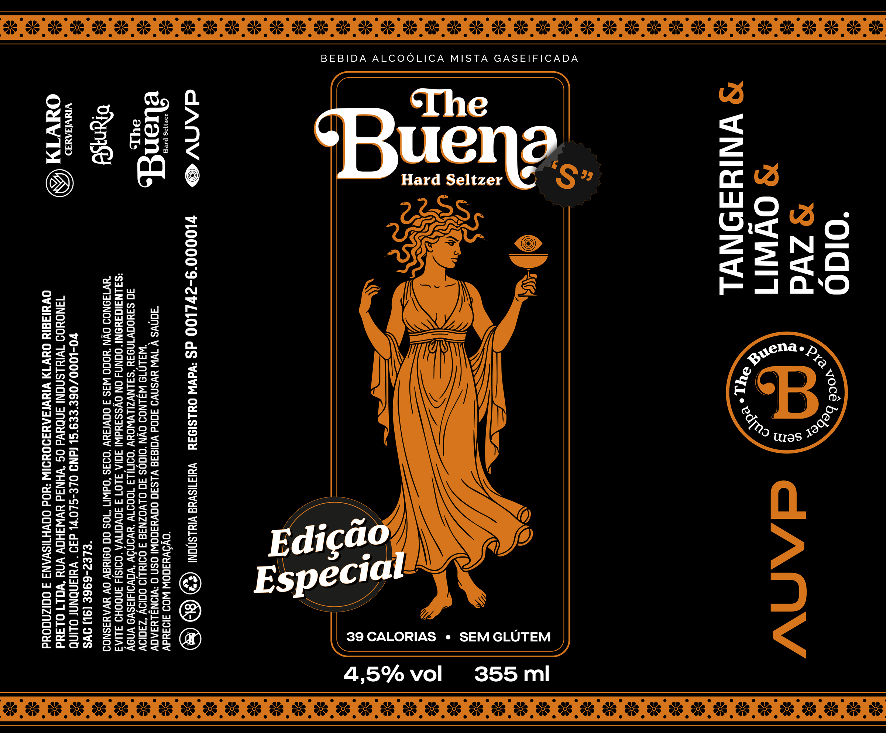

Embalagem · 2025
The Buena
Hard Seltzer
Edição especial de uma lata sleek de 355 ml: rótulo, ilustração e a malha de mockups que sustenta a apresentação da marca.

O desafio
Hard seltzer é uma categoria que se vende no gelo, de longe e no meio de dezenas de latas parecidas. A edição especial precisava fugir do vocabulário pastel do segmento sem abrir mão da informação obrigatória — que numa lata sleek de 355 ml disputa espaço com tudo.
A solução
Preto integral como base, uma única cor de apoio e uma ilustração de linha em escala cheia ocupando o corpo da lata. As faixas ornamentais no ombro e na base fecham a peça como um rótulo clássico, e o giro de 360° foi planejado em três painéis: marca, sabor e obrigatórios.

Leitura em três tempos
A frente carrega marca e ilustração. A lateral resolve o sabor em uma pilha vertical — Tangerina & Limão & Paz & Ódio — junto do selo e do lockup dos parceiros. O verso concentra os obrigatórios em corpo pequeno e entrelinha apertada, liberando o resto da superfície para respiro.
Paleta
Dois valores e nada mais: um preto profundo que segura o brilho do alumínio e um âmbar que funciona tanto em massa quanto em linha de 0,25 pt.




Ficha técnica
- EmbalagemLata sleek · Ø 58,6 mm
- Volume355 ml
- Teor alcoólico4,5% vol
- Calorias39 kcal · sem glúten
- Arte2390 × 1978 pt · vetor
- Cores2 + branco
Como os mockups foram feitos
Todas as imagens desta página saem do mesmo arquivo vetorial, projetado sobre a geometria real da lata: corpo cilíndrico, ombro cônico e recravo. A iluminação reproduz duas softboxes laterais, então o reflexo caminha pela superfície conforme a lata gira — é o que faz o alumínio parecer alumínio.